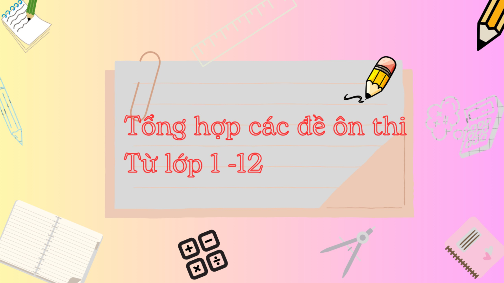

Các khóa học
- Chương I:Ứng dụng đạo hàm để khảo sát và vẽ đồ thị của hàm số
- Chương II: Vector và hệ trục tọa độ trong không gian
- Chương III: Các số đặc trưng đo mức độ phân tán của mẫu số liệu ghép nhóm
- Chương IV: Nguyên hàm và tích phân
- Chương V: Phương pháp tọa độ trong không gian
- Chương VI: Xác suất có điều kiện
Tập 1
Tập 2
- Chương I: Hàm số lượng giác và phương trình lượng giác
- Chương II: Dãy số. Cấp số cộng và cấp số nhân
- Chương III: Các số đặc trưng đo xu thế trung tâm của mẫu số liệu ghép nhóm
- Chương IV: Hệ song song trong không gian
- Chương V: Giới hạn. Hàm số liên tục
- Chương VI: Hàm số mũ và hàm số Logarit
- Chương VII: Quan hệ vuông góc trong không gian
- Chương VIII: Các quy tắc tính xác suất
Tập 1
Tập 2
- Chương I: Mệnh đề và tập hợp
- Chương II: Bất phương trình và hệ bất phương trình bậc nhất hai ẩn
- Chương III: Hệ thức lượng trong tam giác
- Chương IV: Vector
- Chương V: Các số đặc trưng của mẫu số liệu không ghép nhóm
- Chương VI: Hàm số, đồ thị và ứng dụng
- Chương VII: Phương pháp tọa độ trong mặt phẳng
- Chương VIII: Đại số tổ hợp
- Chương IX: Tính xác suất theo định nghĩa cổ điển
Tập 1
Tập 2
- Chương I: Phương trình và hệ phương trình bậc nhất hai ẩn
- Chương II: Phương trình và bất phương trình bậc nhất một ẩn
- Chương III: Căn bậc hai và căn bậc ba
- Chương IV: Hệ thức lượng trong tam giác vuông
- Chương V: Đường tròn
- Chương VI: Hàm số y = ax² (a ≠ 0). Phương trình bậc hai một ẩn
- Chương VII: Tần số và tần số tương đối
- Chương VIII: Xác suất của biến cố trong một số mô hình xác suất đơn giản
- Chương IX: Đường tròn ngoại tiếp và đường tròn nội tiếp
- Chương X: Một số hình khối trong thực tiễn
Tập 1
Tập 2
- Chương I: Đa thức
- Chương II: Hằng đẳng thức đáng nhớ và ứng dụng
- Chương III: Tứ giác
- Chương IV: Định lý Thales
- Chương V: Dữ liệu và biểu đồ
- Chương VI: Phân thức đại số
- Chương VII: Phương trình bậc nhất và hàm số bậc nhất
- Chương VIII: Mở đầu về tính xác suất của biến cố
- Chương IX: Tam giác đồng dạng
- Chương X: Một số hình khối trong thực tiễn
Tập 1
Tập 2
- Chương I: Số hữu tỉ
- Chương II: Số thực
- Chương III: Góc và đường thẳng song song
- Chương IV: Tam giác bằng nhau
- Chương V: Thu thập và biểu diễn dữ liệu
- Chương VI: Tỉ lệ thức và đại lượng tỉ lệ
- Chương VII: Biểu thức đại số và đa thức một biến
- Chương VIII: Làm quen với biến cố và xác suất của biến cố
- Chương IX: Quan hệ giữa các yếu tố trong một tam giác
- Chương X: Một số hình khối trong thực tiễn
Tập 1
Tập 2
- Chương I: Tập hợp các số tự nhiên
- Chương II: Tính chia hết trong tập hợp các số tự nhiên/li>
- Chương III: Số nguyên
- Chương IV: Một số hình phẳng trong thực tiễn
- Chương V: Tính đối xứng của hình phẳng trong tự nhiên
- Chương VI: Phân số
- Chương VII: Số thập phân
- Chương VIII: Những hình hình học cơ bản
- Chương IX: Dữ liệu và xác suất thực nghiệm
Tập 1
Tập 2
- Chủ đề 1: Ôn tập và bổ sung
- Chủ đề 2: Số thập phân
- Chủ đề 3: Một số đơn vị đo diện tích
- Chủ đề 4: Các phép tính với số thập phân
- Chủ đề 5: Một số hình phẳng. Chu vi và diện tích
- Chủ đề 6: Ôn tập học kì 1
- Chủ đề 7: Tỉ số và các bài toán liên quan
- Chủ đề 8: Thể tích. Đơn vị đo thể tích
- Chủ đề 9: Diện tích và thể tích của một số hình khối
- Chủ đề 10: Số đo thời gian. Vận tốc. Các bài toán liên quan đến chuyển động đều
- Chủ đề 11: Một số yếu tố thống kê và xác suất
- Chủ đề 12: Ôn tập cuối năm
Tập 1
Tập 2
- Chủ đề 1: Ôn tập và bổ sung
- Chủ đề 2: Góc và đơn vị đo góc
- Chủ đề 3: Số có nhiều chữ số
- Chủ đề 4: Một số đơn vị đo đại lượng
- Chủ đề 5: Phép cộng và phép trừ
- Chủ đề 6: Đường thẳng vuông góc. Đường thẳng song song
- Chủ đề 7: Ôn tập học kì 1
- Chủ đề 8: Phép nhân và phép chia
- Chủ đề 9: Làm quen với yếu tố thống kê, xác suất
- Chủ đề 10: Phân số
- Chủ đề 11: Phép cộng, phép trừ phân số
- Chủ đề 12: Phép nhân, phép chia phân số
- Chủ đề 13: Ôn tập cuối năm
Tập 1
Tập 2
- Chủ đề 1: Ôn tập và bổ sung
- Chủ đề 2: Bảng nhân, bảng chia
- Chủ đề 3: Làm quen với hình phẳng, hình khối
- Chủ đề 4: Phép nhân, phép chia trong phạm vi 100
- Chủ đề 5: Một số đơn vị đo độ dài, khối lượng, dung tích và nhiệt độ
- Chủ đề 6: Phép nhân, phép chia trong phạm vi 1,000
- Chủ đề 7: Ôn tập học kì 1
- Chủ đề 8: Các số đến 10,000
- Chủ đề 9: Chu vi, diện tích một số hình phẳng
- Chủ đề 10: Cộng, trừ, nhân, chia trong phạm vi 10,000
- Chủ đề 11: Các số đến 100,000
- Chủ đề 12: Cộng, trừ trong phạm vi 100,000
- Chủ đề 13: Xem đồng hồ. Tháng - năm. Tiền Việt Nam
- Chủ đề 14: Nhân, chia trong phạm vi 100,000
- Chủ đề 15: Làm quen với yếu tố thống kê, xác suất
- Chủ đề 16: Ôn tập cuối năm
Tập 1
Tập 2
- Chủ đề 1: Ôn tập và bổ sung
- Chủ đề 2: Phép cộng, phép trừ trong phạm vi 20
- Chủ đề 3: Làm quen với khối lượng, dung tích
- Chủ đề 4: Phép cộng, phép trừ (có nhớ) trong phạm vi 100
- Chủ đề 5: Làm quen với hình phẳng
- Chủ đề 6: Ngày - giờ, giờ - phút, ngày - tháng
- Chủ đề 7: Ôn tập học kì 1
- Chủ đề 8: Phép nhân, phép chia
- Chủ đề 9: Làm quen với hình khối
- Chủ đề 10: Các số trong phạm vi 1 000
- Chủ đề 11: Độ dài và đơn vị đo độ dài. Tiền Việt Nam
- Chủ đề 12: Phép cộng, phép trừ trong phạm vi 1 000
- Chủ đề 13: Làm quen với yếu tố thống kê, xác suất
- Chủ đề 14: Ôn tập cuối năm
Tập 1
Tập 2
- Chủ đề 1: Các số từ 0 đến 10
- Chủ đề 2: Làm quen với một số hình phẳng
- Chủ đề 3: Phép cộng, phép trừ trong phạm vi 10
- Chủ đề 4: Làm quen với một số hình khối
- Chủ đề 5: Ôn tập học kì 1
- Chủ đề 6: Các số đến 100
- Chủ đề 7: Độ dài và đo độ dài
- Chủ đề 8: Phép cộng, phép trừ (không nhớ) trong phạm vi 100
- Chủ đề 9: Thời gian. Giờ và lịch
- Chủ đề 10: Ôn tập cuối năm
Tập 1
Tập 2

